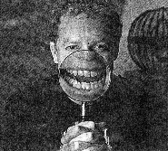

Music from the darkside
Richard Zoglin
from Time, Oct. 11, 1993 v142 n15 p.80

Venture down the zigzagging stairway to Danny Elfman's home in the hills above Malibu, and you might think you've wandered into a storyboard for The Nightmare Before Christmas. A dinosaur skull is perched on a coffee table in the living room. A human skeleton from Peru sits in one corner. A shrunken head is encased in glass downstairs. "Halloween is the night I live for," says Elfman. "When Christmastime rolled around when I was a kid, I became depressed."
Even without his ghoulish tastes, there was little doubt that Elfman was the man to turn Tim Burton's holiday fable into a musical as well as a visual feast. Elfman has written the scores for all of Burton's films, including Batman and Edward Scissorhands. His dark, richly textured music has also set the mood for such films as Darkman and Dick Tracy, as well as TV's The Simpsons. All that in addition to his parallel career as lead singer and composer for the quirky Los Angeles rock bank Oingo Boingo, creator of songs like Dead Man's Party and Weird Science.
His score for Nightmare may finally bring Elfman the recognition that his dazzling talent has never quite received. A self-taught musician, he has always been an outsider in the tight-knit world of Hollywood film composers. (He has never even been nominated for an Oscar.) It doesn't help that he writes old-fashioned, full-orchestra scores at a time when pasting a few pop songs onto the track qualifies as film composing. Even his breakthrough score for Burton's Batman was overshadowed by the songs (and a competing sound-track album) written for the film by Prince. Reviews that praised Prince's "score" for Batman frustrated Elfman. "It kind of epitomized the whole twisted concept of what a sound track is and isn't," he says.
Elfman, 40, learned what a sound track is by spending weekends at the neighborhood movie theater while growing up in Los Angeles. He fell in love with the music of such vintage Hollywood masters as Max Steiner, Franz Waxman and (his most obvious influence) Bernard Herrmann, who scored many of Alfred Hitchcock's films. Elfman began his own music career in the early '70s, when he helped form a performance group called the Mystic Knights of Oingo Boingo. He learned to play virtually every instrument in the group and taught himself composition by transcribing Duke Ellington peices.
Burton, a fan of Oingo Boingo (as the group rechristened itself in 1979), surprised Elfman by asking if he would be interested in writing the music for Pee-wee's Big Adventure, Burton's first movie. "Though I never took it seriously as a potential job," recalls Elfman, "I thought it would be hip to do a meeting." The meeting led to Elfman's first great score -- playful, lyrical, full-bodied -- and launched his movie career.
In Nightmare Before Christmas, Elfman's witty, melodically intricate songs drive the action forward as surely as does the animation. Elfman suggested that he sing the lead role only after the composing was well under way. "I realized that I was writing as lot from my own character," he says. "I went to Tim and said, 'I'm not the best singer alive by a long shot, but no one's going to sing Jack Skellington better than I am.' And he agreed." But first Elfman bounced each number off Mali, 9, one of his two daughters. (Lola is 14.) "Until Mali signed off on it, nothing was approved." (Elfman is separated from his wife; his current girlfriend is Caroline Thompson, Nightmare's screenwriter.)
Not content with a flourishing dual career, Elfman is trying to open up a third track: writing screenplays. Disney is developing a musical, Little Demons, based on an original story by Elfman. "I'm not a genius," he says. "If I have a talent, it's being a good observer and being very tenacious." And a little weird science doesn't hurt.